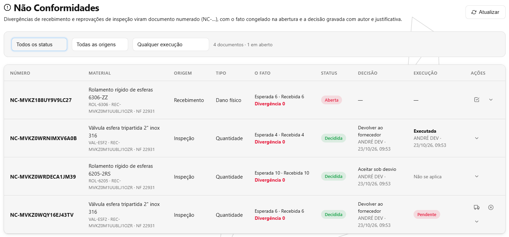
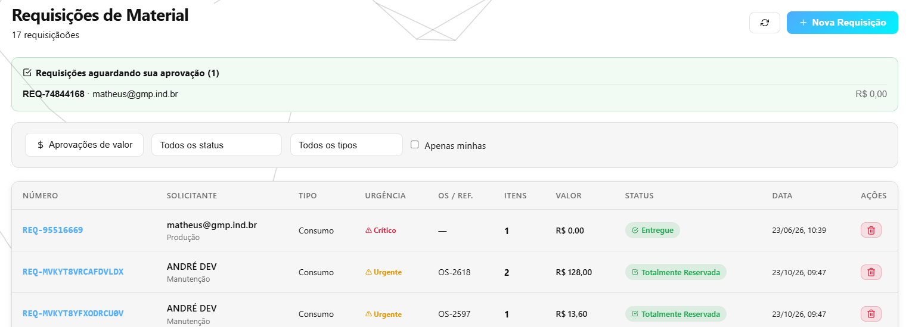
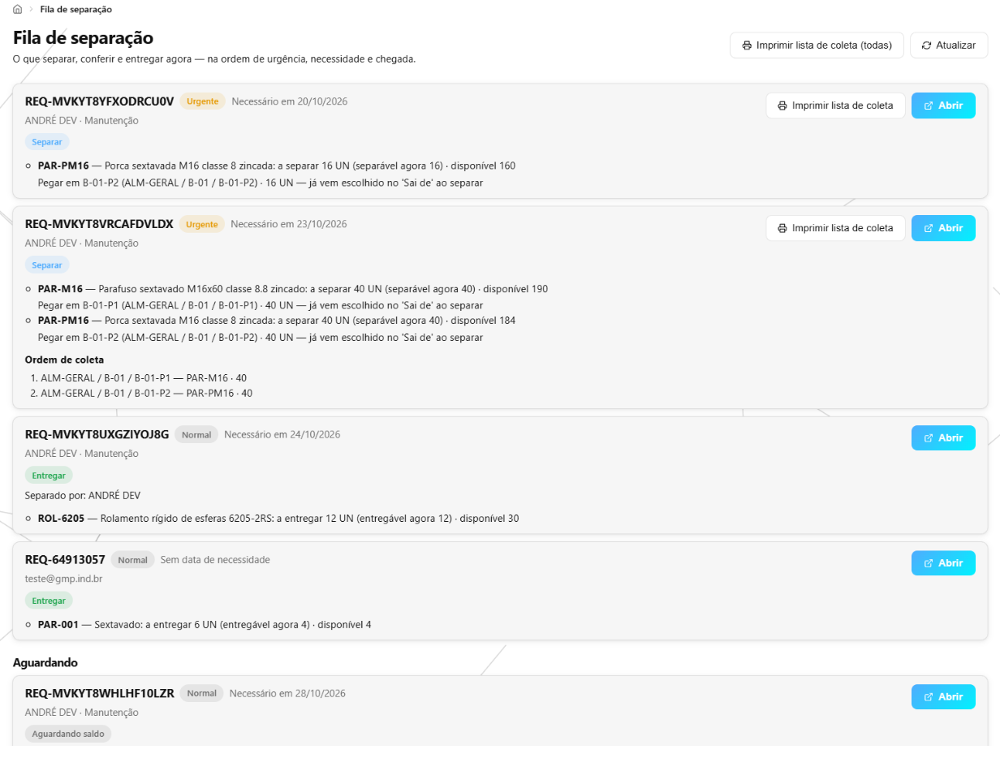
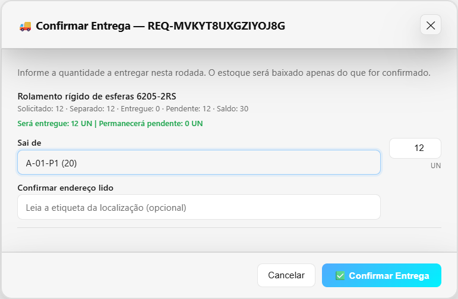
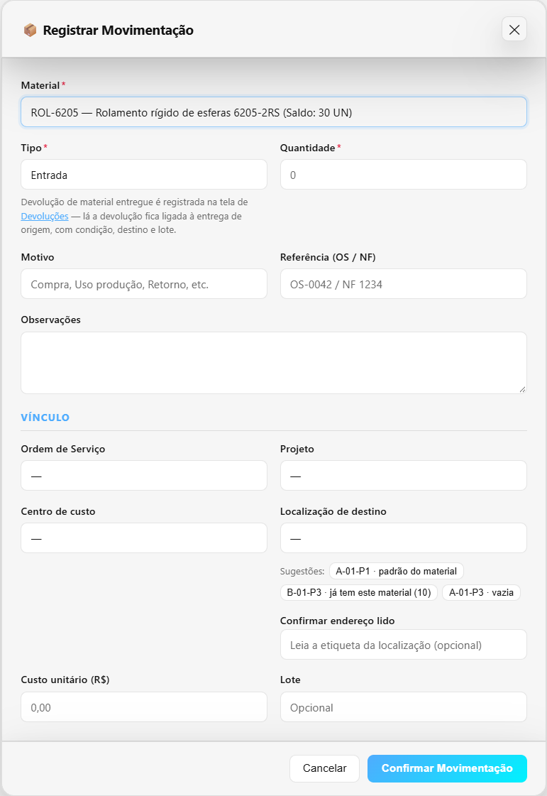
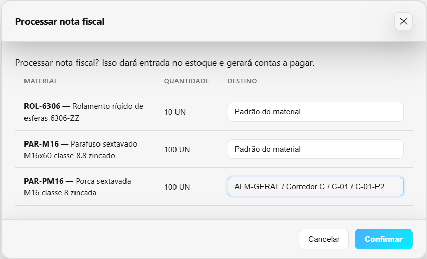
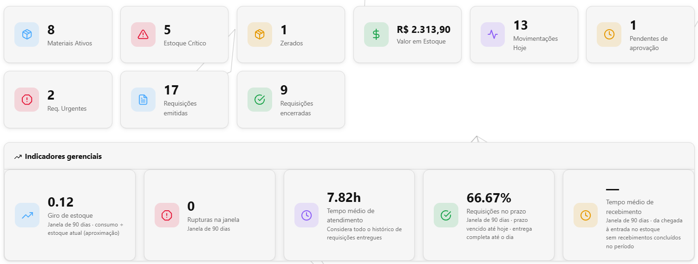
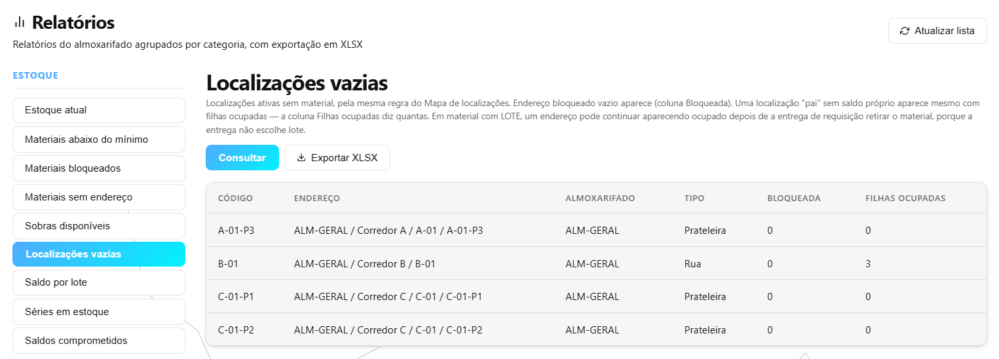

O que foi feito no sistema nesta semana
Semana de 27/09 a 03/10/2026 · CRM GMP Industriais
O almoxarifado ganhou a tela de Não Conformidades, a Fila de separação, as regras de aprovação por valor, urgência e material crítico, e passou a dizer de que prateleira cada item sai e para qual prateleira cada item entra. Por baixo, o material que chega do fornecedor passou a ficar com quem estava esperando por ele, o pedido de compra passou a se fechar sozinho quando tudo chega, e o sistema parou de dar uma prateleira como cheia quando ela já está vazia. Foram cerca de 35 horas de trabalho, a maior parte no caminho da compra até a chegada do material e no tratamento do material com defeito.
O que você já pode ver na tela
Não Conformidades: o problema com o material vira um documento com número
Onde: Almoxarifado → Não Conformidades (item novo no menu).
Antes: quando chegava menos material do que a nota dizia, ou quando a inspeção reprovava um lote, o sistema avisava — mas a decisão (aceitar, devolver ao fornecedor, sucatear) não ficava escrita em lugar nenhum. Morava no e-mail de alguém. E o material reprovado ficava bloqueado para sempre, porque nada perguntava se ele já tinha ido embora.
Agora: cada problema vira um documento numerado (NC-…), que nasce sozinho na conferência do recebimento e na inspeção. A tela mostra quem decidiu, quando e por quê, com espaço para anexar laudo e foto. A decisão faz o que diz: “Aceitar” devolve o material ao estoque na hora; “Devolver ao fornecedor” espera o Compras clicar em “Registrar execução” quando a caixa sai de fato, e só então tira do estoque; “Sucatear” ganhou o botão “Solicitar sucateamento”, que já vem preenchido com o material e a quantidade reprovada. O filtro “Pendentes de execução” mostra o que falta despachar, e documento parado sem decisão ou sem execução passa a aparecer em Alertas.

Regras de aprovação: quem precisa assinar cada requisição
Onde: Almoxarifado → Configurações → Regras de Aprovação. E, para quem aprova, no topo de Almoxarifado → Requisições (almox.).
Antes: só havia duas formas fixas de aprovar. Não dava para dizer “acima de R$ 5.000 a Diretoria assina” ou “requisição urgente precisa do supervisor”. E a requisição mais cara, a que travava por valor, avisava os aprovadores uma vez só e depois podia ficar esquecida.
Agora: o administrador cadastra regras dizendo quando cada uma vale (valor, quantidade, material crítico, urgência, material de cliente, centro de custo) e quem pode assinar. Requisição que cai em duas regras precisa de duas assinaturas, de duas pessoas diferentes; enquanto falta assinatura, os botões de aprovar ficam desligados, dizendo o motivo. Quem pode aprovar vê o quadro “Requisições aguardando sua aprovação”, e quem falta assinar é cobrado por e-mail todo dia. A urgência passou a ser uma lista fechada: Normal, Urgente ou Crítico.


Fila de separação: o que separar primeiro, e de onde cada item sai
Onde: Almoxarifado → Fila de separação (item novo no menu, logo abaixo de Requisições). E nas janelas de separar e entregar de cada requisição.
Antes: o almoxarife abria requisição por requisição, na lista com a mais nova primeiro, para descobrir o que tinha de separar. Na entrega, o sistema não perguntava de que prateleira o material saiu, nem quais peças com número de série foram entregues.
Agora: a fila mostra só as requisições com trabalho, na ordem em que devem ser feitas: primeiro o que dá para fazer agora, depois Crítico e Urgente, depois a data de necessidade e a mais antiga. Cada uma diz o que fazer (“Separar”, “Conferir”, “Entregar” ou “Aguardando saldo”) e, por item, quanto dá para fazer agora. Ao separar e entregar, cada item ganhou o campo “Sai de”, com a prateleira e o lote, e a peça com número de série pede quais números saem. Se o separador pega menos do que dava, a janela pergunta o porquê, e o conferente lê a resposta no detalhe.


Onde guardar: sugestão de prateleira, prateleira por item da nota e etiqueta da prateleira
Onde: Almoxarifado → Movimentações → Nova movimentação (tipo Entrada); Almoxarifado → Recebimentos → Processar nota; e Almoxarifado → Configurações → Localizações.
Antes: na entrada, a tela mostrava a lista de todas as prateleiras, sem dizer qual fazia sentido. Ao processar a nota fiscal, todos os itens iam para a prateleira padrão de cada material, sem perguntar. E a prateleira não tinha etiqueta.
Agora: na entrada aparecem até três “Sugestões”: a prateleira padrão do material, as que já têm aquele material e as vazias que aceitam aquele tipo — e a tela avisa antes de salvar se a padrão não pode receber. Processar a nota abre uma janela com cada item e a prateleira de destino de cada um. Cada prateleira ganhou etiqueta com QR, impressa pelo próprio sistema; quem está na frente da prateleira pode ler a etiqueta para o sistema conferir se é mesmo aquela.


Motivos de movimentação viram uma lista
Onde: Almoxarifado → Configurações → Motivos de Movimentação; e o campo Motivo em Almoxarifado → Movimentações.
Antes: o porquê de um ajuste ou de uma perda era digitado à mão a cada vez: “avaria”, “Avaria”, “avaria no manuseio”, “quebrou”. Não dava para perguntar “quanto se perdeu por avaria este mês”.
Agora: o administrador mantém a lista de motivos e diz para quais tipos de movimentação cada um vale. Na movimentação, o almoxarife escolhe o motivo da lista (ou digita, se nenhum servir). O histórico de movimentações mostra o motivo e a justificativa, filtra por motivo e leva os dois para o Excel.

Prazo da requisição, “Requisições no prazo” e relatórios novos
Onde: Almoxarifado → Dashboard; Solicitar Material; e Almoxarifado → Relatórios.
Antes: a requisição não tinha prazo, então não dava para saber quantas foram atendidas a tempo. E perguntas de todo dia — “quanto sobrou do lote tal?”, “quanto deste material está preso em reserva ou inspeção?”, “onde tem prateleira livre?”, “qual fornecedor mais erra a quantidade?” — não tinham relatório.
Agora: a requisição ganhou o campo “Data de necessidade”, e o painel do almoxarifado ganhou o cartão “Requisições no prazo”. Em Relatórios entraram: Saldo por lote, Séries em estoque, Saldos comprometidos, Localizações vazias, Ajustes por motivo e Qualidade por fornecedor. O histórico de movimentações passou a filtrar por grupo (toda entrada, toda saída), por usuário e por centro de custo.


O que foi feito por baixo — e por que importa
Parte do trabalho não muda a aparência das telas: é o “motor” que faz as contas e guarda as informações. Quando ele erra, o erro aparece depois, em forma de estoque que não bate ou de material que some. Esta semana, no motor:
O material que chega fica com quem estava esperando por ele
O problema: alguém pedia um material, a requisição ficava “aguardando compra” por semanas e, quando a nota chegava, ninguém avisava. Pior: uma requisição aprovada no dia seguinte levava o material primeiro, e quem esperava ouvia “Máximo: 0” ao tentar separar. É como a fila do açougue em que quem chega por último é atendido antes.
O que foi feito: ao processar a nota — ou ao liberar o material na inspeção — o sistema guarda o que chegou para quem esperava, na ordem da fila de separação, e manda um e-mail dizendo quanto ficou guardado para cada um. A requisição muda sozinha para “Reservada”, e volta ao status certo se a reserva for liberada ou vencer. A reserva de uma requisição só sai pela entrega dela, e só pode ser liberada à mão por quem pediu, pelo almoxarife ou pelo administrador. No caminho, dois cliques em “Processar” deixaram de gerar duas contas a pagar, e o item contado zero deixou de entrar no estoque com a quantidade da nota.
O que isso evita: material esperado há semanas indo para outra obra, e requisição dizendo “reservada” sem ter nada guardado.
O pedido de compra se fecha sozinho — e reabre se o lançamento for desfeito
O problema: o pedido de compra só saía da lista de atrasados se alguém o marcasse como recebido à mão, um por um. Pedido que recebeu 4 de 10 e parou não avisava ninguém. E a solicitação de compra do almoxarifado era dada como recebida na primeira nota, mesmo de 4 de 10: o sistema então sugeria comprar de novo os 6 que ainda estavam a caminho.
O que foi feito: quando a última remessa chega, o pedido passa a “Recebido” sozinho, e o nome de quem processou a nota fica registrado. Pedido pela metade gera o aviso “Pedido de compra recebido parcialmente”, dizendo quanto falta. A solicitação só fecha quando o material dela chega, mostrando “chegou 4 de 10” enquanto isso. Se a entrada da nota for desfeita, o pedido e a solicitação reabrem, e a tela diz qual pedido voltou.
O que isso evita: pedido entregue aparecendo como atrasado, pedido pela metade esquecido e compra em dobro do que já estava vindo.
A prateleira que o sistema mostra é a prateleira de verdade
O problema: numa entrega de requisição, o sistema baixava o material do total mas deixava a prateleira com o saldo antigo. Entrada de 100 na prateleira A, entrega de 100: o material zerava e a prateleira A continuava “com 100” no Mapa. Também era possível guardar material numa prateleira desativada (que nenhuma tela mostra), apagar uma prateleira ocupada — e o material sumia de todas as telas — ou criar uma prateleira “nova” que, na verdade, trazia de volta uma removida.
O que foi feito: a saída passou a baixar da prateleira de onde o material sai. Prateleira ocupada não pode ser apagada nem desativada, prateleira desativada não recebe material, e o código proposto para uma prateleira nova nunca repete o de uma removida. As áreas especiais (quarentena, sucata, devoluções, expedição, material de cliente) passaram a avisar o que fazem e o que não fazem.
O que isso evita: procurar material numa prateleira vazia e achar que está sem espaço onde há espaço.
Sucatear o reprovado não leva mais peça boa
O problema: chegaram 10 peças, a inspeção reprovou 3. Ao sucatear “as reprovadas” pelo caminho comum, o sistema baixava 3 peças boas e deixava as 3 ruins no galpão. E devolver ou sucatear o mesmo reprovado por dois caminhos diferentes podia tirá-lo duas vezes.
O que foi feito: o sucateamento que nasce do documento de não conformidade passa pelas mesmas duas aprovações de sempre e baixa só o material bloqueado pela inspeção. Liberar, devolver e sucatear olham a mesma inspeção: o que saiu por um caminho não sai pelo outro.
O que isso evita: perder material bom e manter material ruim no estoque.
Peça com número de série: o sistema sabe qual peça saiu
O problema: a entrega e o ajuste de estoque mudavam só o número. Ajustar um material de 3 para 5 peças deixava o estoque em 5 e a lista de peças com 3; a peça entregue continuava marcada “em estoque”, e a próxima entrega podia escolher uma peça que já não estava lá.
O que foi feito: a entrega e o ajuste pedem quais peças entram ou saem, e há um jeito de acertar as peças que as entregas antigas deixaram erradas. O inventário avisa quais materiais ficaram com as peças diferentes do estoque.
O que isso evita: rastreio peça a peça que não bate com o que está na prateleira.
Para onde foi o tempo
Cerca de 35 horas de desenvolvimento nesta semana.
Tempo por atividade
| Atividade | Horas |
|---|---|
| Da compra à chegada: pedido que se fecha sozinho e material guardado para quem esperava | 12 h |
| Não Conformidades: documento, decisão, devolução ao fornecedor e sucateamento | 10 h |
| Prateleiras: sugestão, etiqueta, saldo certo por prateleira e áreas especiais | 4 h |
| Separação e entrega: Fila de separação, “Sai de” e peças com número de série | 4 h |
| Motivos de movimentação, prazo da requisição e relatórios novos | 3 h |
| Regras de aprovação | 2 h |
| Total | 35 h |
Foi uma semana de motor. As telas novas aparecem pouco na conta porque são a parte rápida: desenhar um botão leva minutos, mas decidir o que ele faz com o estoque — e garantir que não faz o que não deve — leva horas. Quase metade do tempo foi nas conferências automáticas: são robôs que repetem centenas de situações a cada mudança (duas pessoas mexendo no mesmo material ao mesmo tempo, a nota processada duas vezes, a entrada desfeita depois da entrega) para que o que já funciona não quebre escondido. Foi assim que apareceram, antes de chegar a quem usa, a peça boa sucateada no lugar da ruim e a prateleira que continuava cheia depois da entrega. O resto foi planejar cada mudança e atualizar os manuais.
As horas são estimadas pelo registro do trabalho salvo ao longo da semana. Pesquisa, conversas e testes feitos à mão não entram — o número real é maior.
Quer conferir?
- Abra Almoxarifado → Não Conformidades, marque “Pendentes de execução” e veja a coluna Execução. Numa linha decidida como “Devolver ao fornecedor”, clique em “Registrar execução”.
- Abra Almoxarifado → Configurações → Regras de Aprovação e crie uma regra para requisição “Urgente”. Depois, em Requisições (almox.), veja o quadro “Requisições aguardando sua aprovação”.
- Abra Almoxarifado → Fila de separação e veja a ordem das requisições e o que fazer em cada uma. Abra uma e clique em “Entregar escolhendo de onde sai…”.
- Abra Almoxarifado → Movimentações → Nova movimentação, escolha Entrada e um material: veja as “Sugestões” abaixo do campo de localização.
- Abra Almoxarifado → Configurações → Localizações e clique em “Etiqueta” numa linha para imprimir o QR da prateleira.
- Abra Almoxarifado → Relatórios → Estoque → Localizações vazias, e o Dashboard do almoxarifado para ver o cartão “Requisições no prazo”.